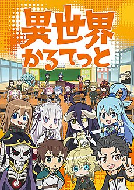
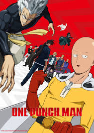
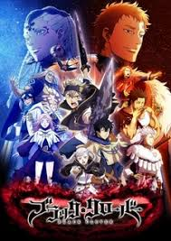
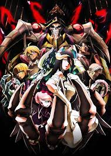
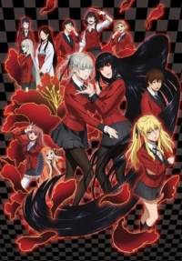
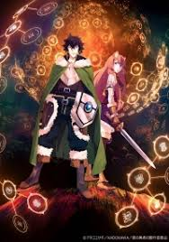

Isekai Quartet
Isekai Quartet (Japanese: 異世界かるてっと Hepburn: Isekai Karutetto) is a Japanese anime series that serves as a chibi-style crossover between the light novel series KonoSuba, Overlord, Re:Zero − Starting Life in Another World, and The Saga of Tanya the Evil, all published by Kadokawa Corporation.
Tags:

One-Punch Man One-Punch Man (Japanese: ワンパンマン Hepburn: Wanpanman) is a Japanese superhero web manga created by ONE[5] which began publication in early 2009.[6] The series quickly went viral, surpassing 7.9 million hits in June 2012.[7] The Japanese shortened name Wanpanman is a play on the long-running children's character Anpanman,[8] wanpan being a contraction of wanpanchi ("one punch").[9] One-Punch Man tells the story of Saitama, a superhero who has grown bored by the absence of challenge in his fight against evil and seeks to find a worthy opponent.
A digital manga remake of the series, illustrated by Yusuke Murata, began publication on Shueisha's Tonari no Young Jump website in 2012.[6] The chapters are periodically collected and printed into tankōbon volumes, with nineteen volumes released as of April 4, 2019. Viz Media has licensed the remake for English serialization in its Weekly Shonen Jump digital magazine.[10]
Tags:

Black Clover Black Clover (Japanese: ブラッククローバー Hepburn: Burakku Kurōbā) is a Japanese manga series written and illustrated by Yūki Tabata. It has been serialized in Shueisha's Weekly Shōnen Jump magazine since February 16, 2015, and has been collected into 20 tankōbon volumes. The story centers around Asta, a young boy seemingly born without any magic power, something that is unknown in the world he lives in. With his fellow mages from the Black Bulls, Asta plans to become the next Wizard King.
The manga has been adapted into an original video animation produced by Xebec, which was released in 2017, as well an anime television series produced by Pierrot, which also premiered in Japan in 2017.[2] The manga series was licensed for an English language release in North America by Viz Media, while the anime series is licensed by Crunchyroll and Funimation.
Tags:

Overlord Overlord (オーバーロード Ōbārōdo) is a Japanese light novel series written by Kugane Maruyama and illustrated by so-bin. It began serialization online in 2010, before being acquired by Enterbrain. Thirteen volumes have been published since July 30, 2012. A manga adaptation by Satoshi Ōshio, with art by Hugin Miyama, began serialization in Kadokawa Shoten's manga magazine Comp Ace from November 26, 2014. Both the light novels and the manga are licensed in North America by Yen Press, with a release date of November 8, 2016.
The anime television series adaptation by Madhouse consists of 3 seasons with 13 episodes each, with the first season airing from July 7 to September 29, 2015. Two compilation anime films recapping the events from the first season were released in Japan on February 25, 2017, and March 11, 2017, respectively. The second season ran from January 9 to April 3, 2018, with the third season premiering later the same year on July 10, 2018, after which the last episode aired on October 2, 2018.
Tags:

Kakegurui Kakegurui – Compulsive Gambler (Japanese: 賭ケグルイ Hepburn: Kakegurui) is a Japanese manga series written by Homura Kawamoto and illustrated by Tōru Naomura, which began serialization in Square Enix's Gangan Joker from March 2014 and is licensed in English by Yen Press. A prequel spin-off manga, Kakegurui Twin, began serialization in Gangan Joker from 2015. An anime television adaptation by MAPPA aired in Japan from July 1 to September 23, 2017, and a live-action drama adaptation aired in Japan in 2018. A second season titled Kakegurui ×× aired from January 8 to March 26, 2019.
Tags:

Tate no Yuusha no Nariagari The Rising of the Shield Hero (盾の勇者の成り上がり Tate no Yūsha no Nariagari) is a Japanese light novel series written by Aneko Yusagi. ... The 25-episode anime television series adaptation produced by Kinema Citrus premiered in January 2019.